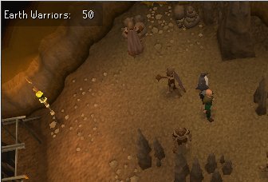
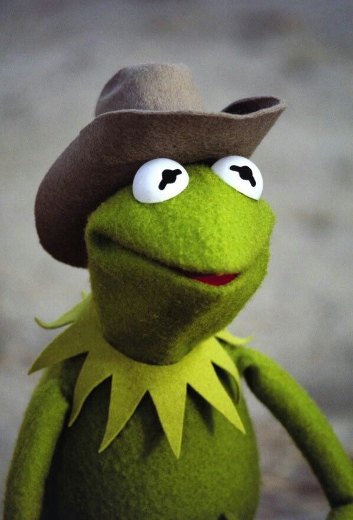
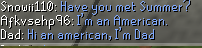

What's a remake without focus on unique features that build the game?
The battle of the worlds!
A new whole world was added with the whole new highscores to match it!
World 2 being the custom/QoL verison of 2009scape and World 1 becoming the authentic 2009scape.
World 2 now adding Skill Cape Perks which you can find here : Click here
World 2 also adding unlimited rerolls
For both worlds we are looking at the xp drops updates! You can toggle it by doing the command : ::xptoggle
You can also change it from the total xp to the most recent skill by doing ::xpconfig track recent increment
And Slayer Toggles! Just type in ::toggleslayer while you have an active task and watch your counter go crazy!

But that's not all..

New Content
x20 xp rate
Implemented a new xp rate to tempt the world 2 players with. The xp rate will have it's own set of claims to the 99s.
Make sure like every other rate once you are first in a 99 to post in #claim-to-fame in the discord.
Bot Chat now shows up in the chat box! With a bunch of new phrases being added all the time by our beloved Kermit!

Added all the NPCs for the varrock museum basement area
Added dialogue to Teacher and Pupil (male) NPC variant/li>
Added dialogue to Natural Historian NPC (not complete, requires cutscenes)
Added Ghost NPCs to "The Golem" quest area and 'Strange Implement' ground item
Added stairs support for Varrock Museum for underground area
Added dialogue to one 'Schoolgirl' NPC in varrock museum area
Added Altar Tabs
Restructured the project
Alphabetized the ::quests in Discord
Alphabetized the ::quests list ingame
Bug Fixes:
Added a check for Leaf-bladed sword
Fixed cooking bug where fire goes out and the player can still cook.
Mystic fix and added slayer drops + bonuses
Renamed the game instructor
Reduced the spam that bots would produce
Fixed Jelly Droptable
Removed a bunch of offensive names from bots and bot's text.
Kalphite soldiers now have animations and a drop table matching 2009
Adjusted the stat bonuses for the Kalphite Worker, Soldier and Guardian to match stat bonuses from OSRS wiki articles since they have accurate stats for the time prior.
Fixes immerseFalador's CoalMiner which starts in the mine and gets stuck.
Possible to thieve coins (and other items) even if players have 28 items in inventory, given they have space.
The giant spiders in Lumbridge are no longer aggressive
NPCs now don't attempt to face/focus you while dying
Fixed clue scroll text to make it more authentic
Pickpocketting has a slower delay
The site has also had some updates this month. We're working on a brand two brand new world highscore pages! Be sure to check it out and share any suggestions you have in the Discord.
See the World 1 Highscores here: here!
See the World 2 Highscores here: here!
 Up to Legacy Archive
Up to Legacy Archive Refresh
Refresh Summer
Summer